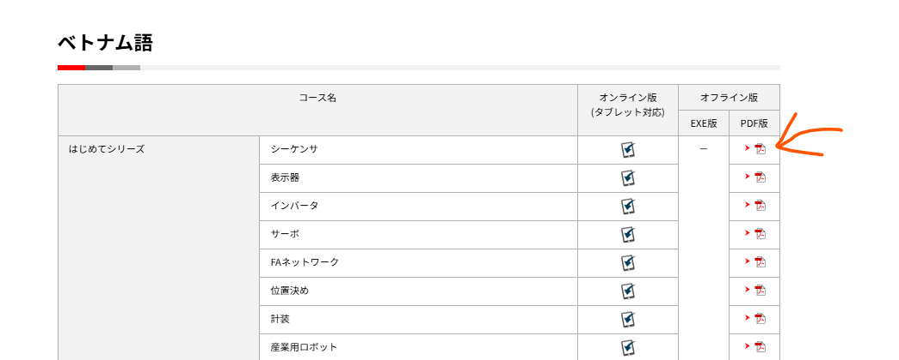
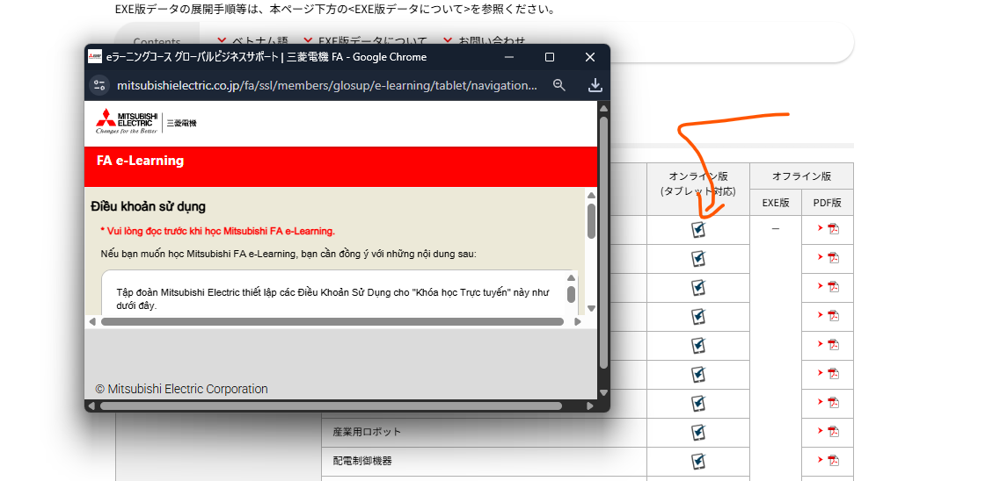
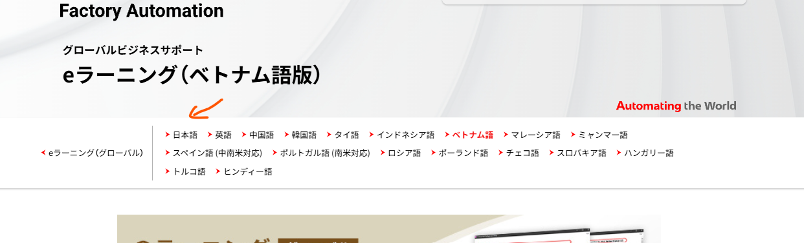

Lộ trình học Mitsubishi FA
Anh gửi em trình tự học theo hệ thống đào tạo mở của hãng. Hiện Mitsubishi là bộ e-learning open đầy đủ và dễ theo nhất.
1Đăng nhập tài khoản
Em vào link dưới đây, đăng nhập bằng tài khoản anh gửi. Tài khoản này chỉ dùng cho cá nhân em, không chia sẻ tiếp.
2Học e-learning tiếng Việt
Sau khi đăng nhập, em học từ căn bản đến nâng cao tại trang tiếng Việt:
https://www.mitsubishielectric.co.jp/fa/service-support/global/e-learning/vie.html
Hai nhóm em cần đi hết:
- はじめてシリーズ — series nhập môn
- 基礎・応用編 — căn bản và ứng dụng
3Cách mở giáo án
Em có hai cách học. Cách nào cũng được, miễn đi hết series.


4Giáo án tiếng Nhật
Bộ tiếng Việt đủ để nắm căn bản. Khi muốn đọc bản gốc, em chuyển sang mục 日本語 phía trên trang.

5Đăng ký khóa thi và địa điểm học
Khi đã ổn kiến thức, em đăng ký các khóa thi online và chọn địa điểm học:
- Đăng ký khóa / chọn địa điểm: Mitsubishi FA School
- Các địa điểm học và thi tại Tokyo: Tokyo FA
6Điều kiện bắt buộc trước khi đi làm
Em lưu ý: muốn thi công và xử lý hệ thống điện dưới 600V tại Nhật thì bắt buộc phải có chứng chỉ Điện công hạng 2.
Tiếng Nhật: 第二種電気工事士 (Dai-ni-shu Denki Koji-shi).
Đây là điều kiện để bắt đầu với hệ thống điện tại Nhật và đi làm ở cấp căn bản.